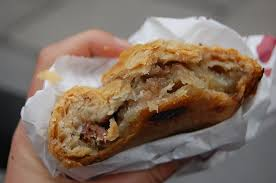

Cornish Pasty

Description
Originally developed for miners to easily transport their lunch in their pocket, this dish has become an iconic part of Cornish cuisine. This recipe includes only the traditional ingredients, although many modern variants have been created as well.
Ingredients
Pastry
- 500g strong bread flour
- 120g lard or shortening
- 125g butter
- 1tsp salt
- 175ml cold water
Filling
- 400g cubed beef
- 300g peeled and diced potato
- 150g peeled and diced swede
- 150g peeled and sliced onion
- Salt and pepper to taste
- Beaten egg or milk to glaze
Steps
- Add salt to the flour in a large bowl, then rub in the fat until it resembles breadcrumbs.
- Add water and bring the mixture together, kneading until it becomes elastic.
- Let rest for 3 hours.
- Roll out and cut into 20cm circles.
- Layer vegetables and meat on top of the pastry, adding seasoning as you go.
- Bring the pastry around and crimp the edges.
- Galze with beaten egg, or egg and milk mixture.
- Bake at 165C for 50-55 minutes until golden.
Home